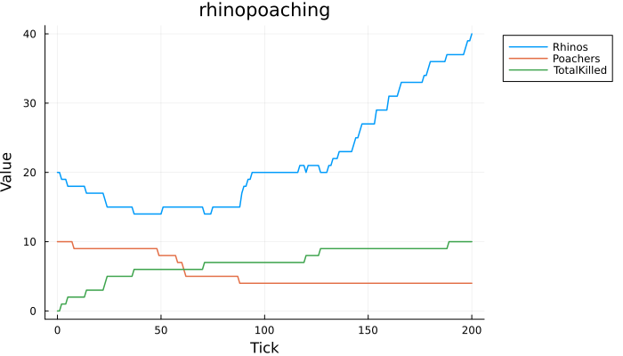

Rhino Poaching
Overview
WHAT IS IT?
This model explores the dynamic interaction between three agents involved in rhino poaching: rhinos, poachers, and rangers. The agents make decisions based on their environment and are also influenced by other agents. A population of rhino agents live inside a protected area and are moving around. Poachers try to find these rhino’s in order to kill them. Rangers try to find the poachers in order to capture them and ultimately prevent the rhino population from going extinct. The model can be used to identify optimal ranger strategies under varying environmental conditions, but also for studying various strategies that poachers may use to avoid detection or for successfully finding rhinos.
HOW IT WORKS
The world The world is created by the “SETUP-PARK” button. The patches at the border of the world are colored black and represent the area outside the reserve. All other patches represent the protected area where a population of rhinos live. These patches contain a varying amount of resources (ranged from 0-1), roughness (ranged from 1-5), home range information (to which rhino does this patch belongs to) and finally signs of recent rhino, poacher and ranger activity. Resources can represent food, water or other features that are relevant to your species of interest. These resources are diffused to create more natural and realistic gradients. All patches have a resource regrowth rate. Some patches do not contain any resources, here called ‘sandy areas’. The slider “SANDY-AREAS” gives you control over the percentage of patches with no resources. Roughness is also an umbrella term for features that may make an area less desirable or more difficult to move through (for example, mountains or dense vegetation). Agents moving through rough areas results the agent waiting an extra tick (slowing them down).By default all patches are equally “easy” to traverse with a roughness value of 1. Adding rough areas with the “ROUGH-AREAS” slider creates the specified amount of rough patches with the maximum value of 5 and a radius around it to smooth out the effect. All this information was combined into one variable named “patch attractiveness”. This value is used to direct each agent’s movement and described in more detail for each agent.
There are several visualization options available from the “VISUALIZATION” drop-menu. The option RESOURCE_COLOURS visualizes the amount of resources available in each patch, colored by a shade of green. The higher the amount of resources, the more darker the shade of green. The patches with a resources value of 0 (the sandy patches) are colored brown. The option ROUGHNESS_COLORS visualizes all patches with a roughness value larger than 1 along a shade of red. Patches with a roughness value equal to 1 are visualized based on their resources. The option RHINO_HOME-RANGES shows how the rhino territories are distributed. The color of the patch is the same as the color of the rhino it belongs to. Please note that the rhino colors are randomly distributed so it may occur that two rhinos have the same color. The next section describes how home ranges are formed.
Rhinos The rhino agents are created and put in place by the “SETUP-RHINOS” button. The number of rhino agents is determined by the NUM-RHINOS slider. Rhinos are randomly placed in the world. If another agent is within a radius of 10 patches, the rhino is moved to a random different patch without any agents within that radius. If none of the patches can for-fill that condition, the rhino will be placed on a random patch that is has not been taken yet. Each 1.5 patch in the rhino’s radius is added to its home range, and it expands when the rhino is moving. If a rhino was killed by poachers, all of its home range patches become unoccupied. The rhinos move by making a weighted decisions by based on the variables of its neighboring patches. The variables involved are the amount of resources, the roughness, and the distance to other rhinos. Each of these variables were scaled from 0 to 1 with 1 indicating the high preference. The variables are then summed and the divided by the sum of weights. The weights for the rhinos are “RESOURCE-WEIGHT”, “ROUGHNESS-WEIGHT”, “RHINO-AVOID-WEIGHT”, and “GOAL-WEIGHT”, and are adjustable in the interface. This information was stored in the variable ‘patch attractiveness’ that describes the overall attractiveness and hence the likelihood that the rhino will go to that patch. This was done by using the rnd:weighted-one-of function. To reduce the likelihood that rhinos will enter territories of other rhinos, the patch attractiveness of neighbors that belong to one of the other rhinos, are divided by 10. Once the rhino moved to one of the neighboring cells, it will consume 1% of the available resources. After moving to a new patch, the rhino will consume 1% of the resources (specified by the FORAGE-AMOUNT slider), add the patch to its territory and a 50% chance of leaving signs in that patch. The rhino will also remember and avoid the last 3 visited patches.
Poachers Poachers are added by the SETUP-HUMANS procedure and placed at a random patch on one of the black border patches. The number of poachers in the world can be changed by using the “NUM-POACHERS” slider. The time available for hunting is specified by the “POACHER-TIME” slider. When time has run out, they will leave the park. The variables involved in poacher movement are signs of recent rhino activity, signs of ranger activity, roughness, resources, and distance to goal. The weights for poacher decision-making are “RANGER-AVOID-WEIGHT”, “HUNT-RHINO-WEIGHT”, “ROUGHNESS-WEIGHT”, “RESOURCE-WEIGHT”, and “GOAL-WEIGHT”. Poachers check if there are rhinos within the “POACHER-VISION” radius. If so, the poacher will kill it, remove it from the world and move towards the nearest border patch. Poachers will lay low after successfully escaping the reserve (regardless if a rhino was killed or not). The lay low time was defined as twice the “POACHER-TIME” plus random 100. Poachers also have a 50% chance of leaving signs, whereas killing a rhino will leave permanent signs. Poachers remember patches where they killed rhinos as success sites, patches with recent-rhino-activity as good-sites, and patches with ranger activity as failure sites. The success and failure sites are used to plan new poaching trips and to determine where the poacher will enter the park next.
Rangers The SETUP-HUMANS procedure also builds ranger camps and create rangers. The number of camps and rangers can be specified with the “NUM-CAMPS” and “NUM-RANGERS” slider respectively. Camps are put either randomly, at fixed locations or manually. This can be set from the “CAMP-PLACEMENT” drop-down menu (where “WE-DECIDE” is the manual option). Rangers sprout from camps and start their first patrol there. Rangers use movement rules similar to poachers, only their aim is to find poachers. Their movement is directed by goal distance and weight, rhino signs, poacher signs and roughness. This again accumulates into a patch attractiveness, allowing rangers to pick the highest relative attractiveness with a degree of randomness. The duration of each patrol is specified by the “PATROL-LENGTH” slider. When a ranger detects a poacher within the “RANGER-RADIUS” slider, the poacher was caught and removed from the world. Patches with poacher signs are remembered as risky areas whereas non-poaching sites are remembered as safe-areas. This information is used in the planning of the next patrols. Rangers also have a 50% chance of leaving signs. When the patrol-time ends, rangers move to the nearest camp or border patch and wait a number of ticks before going out again. Ranger agents have two strategies that can be specified from the “PATROL-TYPE” drop-down-menu. The “STANDARD-PATROL” is the weighted decision-making as described above. The “FENCE-PATROL” lets the ranger team moves along the border of the reserve and do not make weighted decisions. If the ranger enters a patch with poacher signs, the PATROL-LENGTH will be reset to 0, and from here makes weighted decisions similar to the STANDARD-PATROL strategy. This represents a so-called ‘response time’ that will take over when an illegal entry was detected.
The signs of rhinos, poachers, and rangers will decrease in value over time. When it reaches 0, the signs are not visible for the agents.
THINGS TO NOTICE
This is an abstract representation of a protected area. The units (patches and ticks) are an arbitrary measurement and don’t map directly to real world time or space. This can only be done when this model is applied to a specific context or setting where one can define what one tick or patch means in the real world.
THINGS TO TRY
The aim is to find ranger strategies that match the existing or realistic anti-poaching strategies, in order to keep as many rhinos alive as possible. It is important to make these ranger strategies realistic and practically feasible. How does adding more teams, longer patrols, influence the number of surviving rhinos? Is one strategy more effective than the other? What will happen if the rangers or poachers know better the whereabouts of the rhinos?
EXTENDING THE MODEL
The strength of this general model and the behavioral rules is that they can be applied to any park or reserve and that one can make additional assumptions to better fit their specific setting. The model should be regarded as a first step to understand the wildlife crime and would only benefit from further improvements and extensions. Additional ranger strategies can be developed, added and tested in this model. This model focuses on active poaching (searching and shooting an animal), but passive poaching such as traps and snares can also be implemented and subsequently test which anti-poaching strategies work best for this poaching activity. Also rangers and poachers may start learning more from one another (communication can lead to success and failure sites being shared), or the effect of corruption. One may also try to change the environment to better represent a real-life national park or reserve by, for example, creating rivers or different types of habits.
NETLOGO FEATURES
To allow for the random weighted decision rules for agent movement use: extensions [rnd] Allowing the use of: rnd:weighted-one-of
CREDITS AND REFERENCES
We would like to thank Michael Mäs and Andrew Lemieux for their support and help in building the model.
Parameters
| Parameter | Type | Default | Description |
|---|---|---|---|
width |
Int |
101 |
width |
height |
Int |
101 |
height |
num_rhinos |
Int |
20 |
num rhinos |
num_poachers |
Int |
10 |
num poachers |
num_rangers |
Int |
4 |
num rangers |
max_roughness |
Float64 |
0.6 |
fraction of rough terrain |
sprout_delay_time |
Int |
500 |
ticks before resource sprouts in rough cells |
resource_regrow_rate |
Float64 |
0.01 |
logistic regrowth rate |
rhino_reproduce_prob |
Float64 |
0.01 |
per-tick reproduction probability |
poacher_detect_range |
Float64 |
5.0 |
poacher search radius for rhino signs |
ranger_detect_range |
Float64 |
3.0 |
ranger detection radius for poachers |
poacher_kill_range |
Float64 |
2.0 |
poacher kill radius for rhinos |
rhino_forage_radius |
Int |
3 |
neighbourhood search for foraging |
activity_decay |
Float64 |
0.99 |
per-tick decay of rhino activity signs |
home_weight |
Float64 |
0.3 |
weight of home-range fidelity |
resource_weight |
Float64 |
0.7 |
weight of resource attraction |
max_rhinos |
Int |
100 |
pre-allocated capacity |
max_ticks |
Int |
200 |
max ticks |
Source Code
The Julia code to run this model:
using ArkModelZoo
_, trajectory = run_rhinopoaching()Time Series

Ensemble Runs
Ten replicates with different random seeds, showing mean ± standard deviation.

Parameter Sensitivity
Varying width.

Appendix: Source Code
This model is implemented in the Ark.jl Entity-Component-System (ECS) framework. The code is split into five files, each with a distinct role:
- Parameters: a mutable struct holding all configurable values.
- Components: lightweight data types attached to individual entities (agents).
- Resources: world-level shared state accessible to all systems.
- Systems: functions that operate on entities each tick, defining model behavior.
- Model: wiring that assembles the world, registers resources and systems, and provides the run entry point.
Parameters (parameters.jl)
The parameter struct uses @kwdef so that every field has a default value and can be overridden by keyword. These defaults match the original NetLogo model’s slider settings.
Base.@kwdef mutable struct RhinoParams
width::Int = 101
height::Int = 101
num_rhinos::Int = 20
num_poachers::Int = 10
num_rangers::Int = 4
max_roughness::Float64 = 0.6 # fraction of rough terrain
sprout_delay_time::Int = 500 # ticks before resource sprouts in rough cells
resource_regrow_rate::Float64 = 0.01 # logistic regrowth rate
rhino_reproduce_prob::Float64 = 0.01 # per-tick reproduction probability
poacher_detect_range::Float64 = 5.0 # poacher search radius for rhino signs
ranger_detect_range::Float64 = 3.0 # ranger detection radius for poachers
poacher_kill_range::Float64 = 2.0 # poacher kill radius for rhinos
rhino_forage_radius::Int = 3 # neighbourhood search for foraging
activity_decay::Float64 = 0.99 # per-tick decay of rhino activity signs
home_weight::Float64 = 0.3 # weight of home-range fidelity
resource_weight::Float64 = 0.7 # weight of resource attraction
max_rhinos::Int = 100 # pre-allocated capacity
max_ticks::Int = 200
seed::Int = 42
endComponents (components.jl)
Components are lightweight data types attached to individual entities (agents). Mutable structs hold per-entity state, while empty tag structs act as markers for the ECS query system to efficiently filter entities.
struct RhinoDummy endResources (resources.jl)
Resources are world-level singletons shared across all systems, used for global state and aggregate statistics.
mutable struct RhinoState
# Rhinos (pre-allocated to max_rhinos)
n_rhinos::Int
rhino_x::Vector{Float64}
rhino_y::Vector{Float64}
rhino_heading::Vector{Float64}
rhino_alive::Vector{Bool}
rhino_home_x::Vector{Float64}
rhino_home_y::Vector{Float64}
rhino_ticks_alive::Vector{Int}
# Poachers
n_poachers::Int
poacher_x::Vector{Float64}
poacher_y::Vector{Float64}
poacher_heading::Vector{Float64}
poacher_alive::Vector{Bool}
poacher_goal::Vector{Int} # 0=journey-to, 1=hunting, 2=journey-after
poacher_caught::Vector{Bool}
# Rangers
n_rangers::Int
ranger_x::Vector{Float64}
ranger_y::Vector{Float64}
ranger_heading::Vector{Float64}
# Grid
width::Int
height::Int
resources::Matrix{Float64}
max_resources::Matrix{Float64}
roughness::Matrix{Float64}
rhino_activity::Matrix{Float64}
# Stats
total_killed::Int
end
mutable struct RhinoStats
n_rhinos::Int
n_poachers::Int
total_killed::Int
end
RhinoStats() = RhinoStats(0, 0, 0)Systems (systems.jl)
Systems contain the model logic and execute in a defined order each tick. Each system struct implements either initialize! (run once at setup) or update! (run every tick).
# --- Helpers ---
function _rhino_weighted_choice(rng, items, weights)
total = sum(weights)
if total <= 0.0
return items[rand(rng, 1:length(items))]
end
r = rand(rng) * total
cumul = 0.0
for (item, w) in zip(items, weights)
cumul += w
if cumul >= r
return item
end
end
return items[end]
end
@inline function _rhino_dist(x1, y1, x2, y2)
return sqrt((x1 - x2)^2 + (y1 - y2)^2)
end
# --- Initialization ---
struct InitRhinoSystem <: System end
function initialize!(::InitRhinoSystem, world::World)
state = get_resource(world, RhinoState)
stats = get_resource(world, RhinoStats)
stats.n_rhinos = sum(state.rhino_alive)
stats.n_poachers = sum(state.poacher_alive)
stats.total_killed = state.total_killed
return nothing
end
# --- Resource Regrowth ---
struct RhinoResourceGrowSystem <: System end
function update!(::RhinoResourceGrowSystem, world::World)
params = get_resource(world, RhinoParams)
state = get_resource(world, RhinoState)
for x in 1:state.width, y in 1:state.height
if state.roughness[x, y] < 1.0
state.resources[x, y] += params.resource_regrow_rate *
(state.max_resources[x, y] - state.resources[x, y])
end
end
return nothing
end
# --- Activity Decay ---
struct RhinoActivityDecaySystem <: System end
function update!(::RhinoActivityDecaySystem, world::World)
params = get_resource(world, RhinoParams)
state = get_resource(world, RhinoState)
state.rhino_activity .*= params.activity_decay
return nothing
end
# --- Rhino Forage ---
struct RhinoForageSystem <: System end
function update!(::RhinoForageSystem, world::World)
params = get_resource(world, RhinoParams)
rng = get_resource(world, RNGResource).rng
state = get_resource(world, RhinoState)
w, h = state.width, state.height
radius = params.rhino_forage_radius
for i in 1:length(state.rhino_alive)
!state.rhino_alive[i] && continue
gx = clamp(round(Int, state.rhino_x[i]), 1, w)
gy = clamp(round(Int, state.rhino_y[i]), 1, h)
# Leave activity at current location
state.rhino_activity[gx, gy] += 1.0
# Forage: weighted random choice of neighboring cell
candidates = Tuple{Int,Int}[]
weights = Float64[]
for dx in -radius:radius, dy in -radius:radius
(dx == 0 && dy == 0) && continue
nx = gx + dx
ny = gy + dy
(nx < 1 || nx > w || ny < 1 || ny > h) && continue
state.roughness[nx, ny] >= 1.0 && continue
res_score = state.resources[nx, ny]
home_dist = _rhino_dist(Float64(nx), Float64(ny),
state.rhino_home_x[i], state.rhino_home_y[i])
home_score = max(0.0, 1.0 - home_dist / 50.0)
score = params.resource_weight * res_score + params.home_weight * home_score * 10.0
if score > 0.0
push!(candidates, (nx, ny))
push!(weights, score)
end
end
if !isempty(candidates)
chosen = _rhino_weighted_choice(rng, candidates, weights)
state.rhino_x[i] = Float64(chosen[1])
state.rhino_y[i] = Float64(chosen[2])
else
angle = rand(rng) * 2π
state.rhino_x[i] = clamp(state.rhino_x[i] + cos(angle) * 2.0, 1.0, Float64(w))
state.rhino_y[i] = clamp(state.rhino_y[i] + sin(angle) * 2.0, 1.0, Float64(h))
end
# Consume resources
new_gx = clamp(round(Int, state.rhino_x[i]), 1, w)
new_gy = clamp(round(Int, state.rhino_y[i]), 1, h)
consumed = min(state.resources[new_gx, new_gy], 1.0)
state.resources[new_gx, new_gy] -= consumed
# Slowly drift home range
state.rhino_home_x[i] = 0.99 * state.rhino_home_x[i] + 0.01 * state.rhino_x[i]
state.rhino_home_y[i] = 0.99 * state.rhino_home_y[i] + 0.01 * state.rhino_y[i]
state.rhino_ticks_alive[i] += 1
end
return nothing
end
# --- Rhino Reproduction ---
struct RhinoReproduceSystem <: System end
function update!(::RhinoReproduceSystem, world::World)
params = get_resource(world, RhinoParams)
rng = get_resource(world, RNGResource).rng
state = get_resource(world, RhinoState)
w, h = state.width, state.height
n_alive = sum(state.rhino_alive)
n_alive >= params.max_rhinos && return nothing
for i in 1:length(state.rhino_alive)
!state.rhino_alive[i] && continue
state.rhino_ticks_alive[i] < 50 && continue
if rand(rng) < params.rhino_reproduce_prob
n_alive >= params.max_rhinos && break
slot = findfirst(x -> !x, state.rhino_alive)
slot === nothing && break
state.rhino_alive[slot] = true
state.rhino_x[slot] = clamp(state.rhino_x[i] + (rand(rng) - 0.5) * 2.0, 1.0, Float64(w))
state.rhino_y[slot] = clamp(state.rhino_y[i] + (rand(rng) - 0.5) * 2.0, 1.0, Float64(h))
state.rhino_heading[slot] = rand(rng) * 360.0
state.rhino_home_x[slot] = state.rhino_x[slot]
state.rhino_home_y[slot] = state.rhino_y[slot]
state.rhino_ticks_alive[slot] = 0
n_alive += 1
end
end
return nothing
end
# --- Poacher System ---
struct RhinoPoacherSystem <: System end
function update!(::RhinoPoacherSystem, world::World)
params = get_resource(world, RhinoParams)
rng = get_resource(world, RNGResource).rng
state = get_resource(world, RhinoState)
w, h = state.width, state.height
for i in 1:state.n_poachers
!state.poacher_alive[i] && continue
state.poacher_caught[i] && continue
if state.poacher_goal[i] == 0
# Journey to crime: move toward high rhino activity
gx = clamp(round(Int, state.poacher_x[i]), 1, w)
gy = clamp(round(Int, state.poacher_y[i]), 1, h)
best_dx, best_dy = 0.0, 0.0
best_activity = 0.0
search_r = round(Int, params.poacher_detect_range)
for dx in -search_r:search_r, dy in -search_r:search_r
(dx == 0 && dy == 0) && continue
nx = gx + dx
ny = gy + dy
(nx < 1 || nx > w || ny < 1 || ny > h) && continue
if state.rhino_activity[nx, ny] > best_activity
best_activity = state.rhino_activity[nx, ny]
best_dx = Float64(dx)
best_dy = Float64(dy)
end
end
if best_activity > 0.1
dist = sqrt(best_dx^2 + best_dy^2)
if dist > 0.0
state.poacher_x[i] += best_dx / dist * 1.5
state.poacher_y[i] += best_dy / dist * 1.5
end
state.poacher_goal[i] = 1
else
angle = state.poacher_heading[i] + (rand(rng) - 0.5) * 60.0
state.poacher_heading[i] = angle
θ = deg2rad(angle)
state.poacher_x[i] += sin(θ) * 1.5
state.poacher_y[i] += cos(θ) * 1.5
end
elseif state.poacher_goal[i] == 1
# Hunting: try to kill a rhino
killed_this_step = false
for j in 1:length(state.rhino_alive)
!state.rhino_alive[j] && continue
d = _rhino_dist(state.poacher_x[i], state.poacher_y[i],
state.rhino_x[j], state.rhino_y[j])
if d < params.poacher_kill_range
state.rhino_alive[j] = false
state.total_killed += 1
killed_this_step = true
break
end
end
if killed_this_step
state.poacher_goal[i] = 2
else
angle = state.poacher_heading[i] + (rand(rng) - 0.5) * 30.0
state.poacher_heading[i] = angle
θ = deg2rad(angle)
state.poacher_x[i] += sin(θ) * 1.0
state.poacher_y[i] += cos(θ) * 1.0
if rand(rng) < 0.1
state.poacher_goal[i] = 0
end
end
else # goal == 2: flee toward nearest edge
edge_dx = state.poacher_x[i] < Float64(w) / 2.0 ? -1.5 : 1.5
edge_dy = state.poacher_y[i] < Float64(h) / 2.0 ? -1.5 : 1.5
state.poacher_x[i] += edge_dx + (rand(rng) - 0.5)
state.poacher_y[i] += edge_dy + (rand(rng) - 0.5)
# Reached edge → respawn at new edge position
if state.poacher_x[i] <= 1.0 || state.poacher_x[i] >= Float64(w) ||
state.poacher_y[i] <= 1.0 || state.poacher_y[i] >= Float64(h)
state.poacher_goal[i] = 0
if rand(rng) < 0.5
state.poacher_x[i] = rand(rng) < 0.5 ? 1.0 : Float64(w)
state.poacher_y[i] = rand(rng) * (h - 1) + 1.0
else
state.poacher_x[i] = rand(rng) * (w - 1) + 1.0
state.poacher_y[i] = rand(rng) < 0.5 ? 1.0 : Float64(h)
end
end
end
state.poacher_x[i] = clamp(state.poacher_x[i], 1.0, Float64(w))
state.poacher_y[i] = clamp(state.poacher_y[i], 1.0, Float64(h))
end
return nothing
end
# --- Ranger System ---
struct RhinoRangerSystem <: System end
function update!(::RhinoRangerSystem, world::World)
params = get_resource(world, RhinoParams)
rng = get_resource(world, RNGResource).rng
state = get_resource(world, RhinoState)
w, h = state.width, state.height
for i in 1:state.n_rangers
angle = state.ranger_heading[i] + (rand(rng) - 0.5) * 90.0
state.ranger_heading[i] = angle
θ = deg2rad(angle)
state.ranger_x[i] = clamp(state.ranger_x[i] + sin(θ) * 2.0, 1.0, Float64(w))
state.ranger_y[i] = clamp(state.ranger_y[i] + cos(θ) * 2.0, 1.0, Float64(h))
for j in 1:state.n_poachers
!state.poacher_alive[j] && continue
state.poacher_caught[j] && continue
d = _rhino_dist(state.ranger_x[i], state.ranger_y[i],
state.poacher_x[j], state.poacher_y[j])
if d < params.ranger_detect_range
state.poacher_caught[j] = true
state.poacher_alive[j] = false
end
end
end
return nothing
end
# --- Stats ---
struct RhinoStatsSystem <: System end
function update!(::RhinoStatsSystem, world::World)
state = get_resource(world, RhinoState)
stats = get_resource(world, RhinoStats)
stats.n_rhinos = sum(state.rhino_alive)
stats.n_poachers = sum(state.poacher_alive)
stats.total_killed = state.total_killed
return nothing
end
# --- Termination ---
struct RhinoTerminationSystem <: System end
function update!(::RhinoTerminationSystem, world::World)
params = get_resource(world, RhinoParams)
tick = get_resource(world, Tick)
if tick.tick + 1 >= params.max_ticks
get_resource(world, Terminate).stop = true
end
return nothing
endModel (model.jl)
The model file assembles all pieces: it creates the ECS World with the required component types, registers resources, builds the Scheduler with systems in execution order, and exposes the public run entry point. The observer pattern records the trajectory each tick.
function _build_rhino_state(params::RhinoParams, rng)
w, h = params.width, params.height
resources = zeros(Float64, w, h)
max_resources = zeros(Float64, w, h)
roughness = zeros(Float64, w, h)
for x in 1:w, y in 1:h
resources[x, y] = -log(max(rand(rng), 1e-10)) * 10.0
max_resources[x, y] = resources[x, y]
roughness[x, y] = rand(rng) < params.max_roughness ? 1.0 : 0.0
end
mr = params.max_rhinos
rhino_x = zeros(Float64, mr)
rhino_y = zeros(Float64, mr)
rhino_heading = zeros(Float64, mr)
rhino_alive = fill(false, mr)
rhino_home_x = zeros(Float64, mr)
rhino_home_y = zeros(Float64, mr)
rhino_ticks = zeros(Int, mr)
for i in 1:params.num_rhinos
rx = rand(rng) * (w - 1) + 1.0
ry = rand(rng) * (h - 1) + 1.0
rhino_x[i] = rx
rhino_y[i] = ry
rhino_heading[i] = rand(rng) * 360.0
rhino_alive[i] = true
rhino_home_x[i] = rx
rhino_home_y[i] = ry
end
np = params.num_poachers
poacher_x = zeros(Float64, np)
poacher_y = zeros(Float64, np)
poacher_heading = zeros(Float64, np)
poacher_alive = fill(true, np)
poacher_goal = zeros(Int, np)
poacher_caught = fill(false, np)
for i in 1:np
if rand(rng) < 0.5
poacher_x[i] = rand(rng) < 0.5 ? 1.0 : Float64(w)
poacher_y[i] = rand(rng) * (h - 1) + 1.0
else
poacher_x[i] = rand(rng) * (w - 1) + 1.0
poacher_y[i] = rand(rng) < 0.5 ? 1.0 : Float64(h)
end
poacher_heading[i] = rand(rng) * 360.0
end
nrg = params.num_rangers
ranger_x = zeros(Float64, nrg)
ranger_y = zeros(Float64, nrg)
ranger_heading = zeros(Float64, nrg)
cx, cy = w / 2.0, h / 2.0
offset = min(w, h) / 4.0
corners = [(cx - offset, cy - offset), (cx + offset, cy - offset),
(cx - offset, cy + offset), (cx + offset, cy + offset)]
for i in 1:min(nrg, 4)
ranger_x[i] = corners[i][1]
ranger_y[i] = corners[i][2]
ranger_heading[i] = rand(rng) * 360.0
end
for i in 5:nrg
ranger_x[i] = cx + (rand(rng) - 0.5) * offset
ranger_y[i] = cy + (rand(rng) - 0.5) * offset
ranger_heading[i] = rand(rng) * 360.0
end
return RhinoState(
params.num_rhinos, rhino_x, rhino_y, rhino_heading, rhino_alive,
rhino_home_x, rhino_home_y, rhino_ticks,
np, poacher_x, poacher_y, poacher_heading, poacher_alive, poacher_goal, poacher_caught,
nrg, ranger_x, ranger_y, ranger_heading,
w, h, resources, max_resources, roughness, zeros(Float64, w, h),
0,
)
end
function rhinopoaching_world(; initial_capacity::Int = 128)
return World(RhinoDummy; initial_capacity = initial_capacity, allow_mutable = true)
end
function rhinopoaching_systems()
return (
InitRhinoSystem(),
RhinoResourceGrowSystem(),
RhinoActivityDecaySystem(),
RhinoForageSystem(),
RhinoReproduceSystem(),
RhinoPoacherSystem(),
RhinoRangerSystem(),
RhinoStatsSystem(),
RhinoTerminationSystem(),
)
end
function rhinopoaching_model(params::RhinoParams = RhinoParams())
world = rhinopoaching_world()
rng_resource = RNGResource(Xoshiro(params.seed))
add_resource!(world, Tick(0))
add_resource!(world, Terminate(false))
add_resource!(world, rng_resource)
add_resource!(world, deepcopy(params))
add_resource!(world, _build_rhino_state(params, rng_resource.rng))
add_resource!(world, RhinoStats())
scheduler = Scheduler(world, rhinopoaching_systems())
initialize!(scheduler)
return scheduler
end
struct RhinoObserver end
function rhino_headers(::RhinoObserver)
return ["Rhinos", "Poachers", "TotalKilled"]
end
function rhino_values(::RhinoObserver, world::World)
stats = get_resource(world, RhinoStats)
return Float64[stats.n_rhinos, stats.n_poachers, stats.total_killed]
end
function run_rhinopoaching(; params::RhinoParams = RhinoParams(), observe::Bool = true)
return _run_model(rhinopoaching_model, RhinoObserver(), rhino_values; params, observe)
end